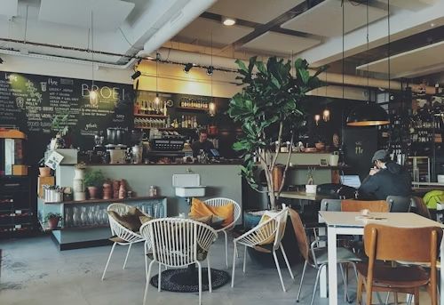

Найкраща кава у вашому місті
Ми використовуємо лише свіжообсмажені зерна 100% арабіки. Завітайте до нас за порцією натхнення та ароматним еспресо.

Атмосфера нашого закладу
Не знаєте, що обрати?
Натисніть на кнопку, і ми підберемо напій спеціально для вас!